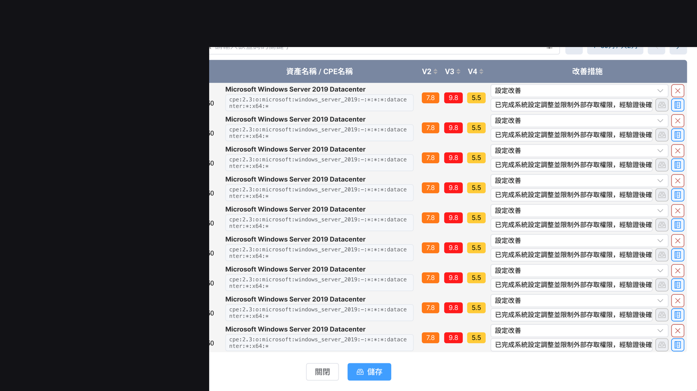
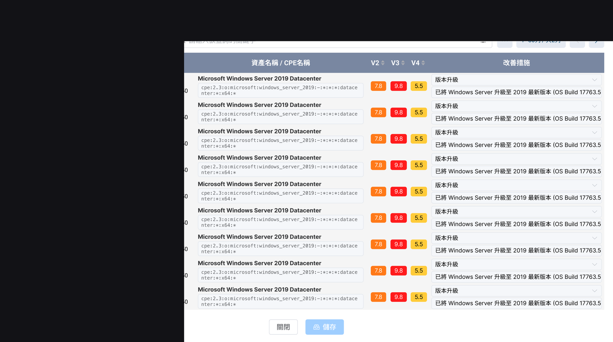
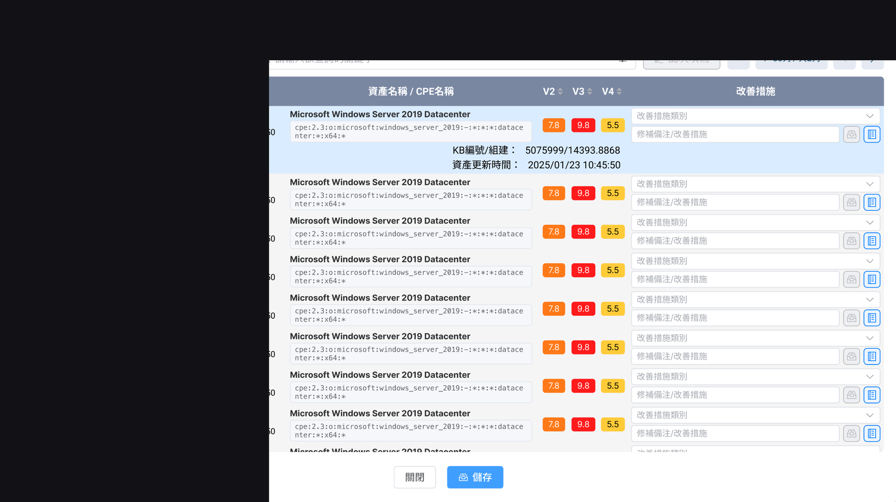
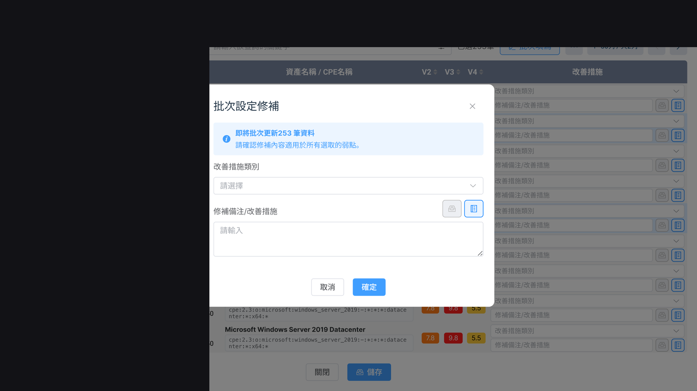

為滿足資安法、金融／上市櫃監管與 ISO 27001 對資產清單與弱點修補的稽核要求，設計資產 IP 檢視、弱點狀態分流與修補紀錄等產品能力，並涵蓋 Agent 自動更新與已刪除軟體軌跡。
公務機關、關鍵基礎設施與受監管企業需定期提交／留存弱點掃描與修補證據；實務上資產盤點、修補進度與查核舉證常分散且難追溯。
以統一平台支援資產清單查詢與弱點修補管理：依未修補／已改善／已修補分流、CVE 與嚴重度呈現、改善措施紀錄；Agent 自動更新與 Windows patch；保留軟體消失軌跡以利稽核。
對應政府／資安署申報與內部報告場景
資通安全管理法（定期弱點掃描修補與留存）、金融與上市櫃監管／ESG 揭露、ISO 27001 稽核必考資產管理與弱點修補。
資產 IP 檢視、弱點修補管理表、狀態分頁、搜尋與改善措施編輯；Agent 自動更新與 KB patch；已刪除軟體紀錄。
政府稽核或例行申報；工程師修補與會議報告；證明更新進度；留存查核證據。



